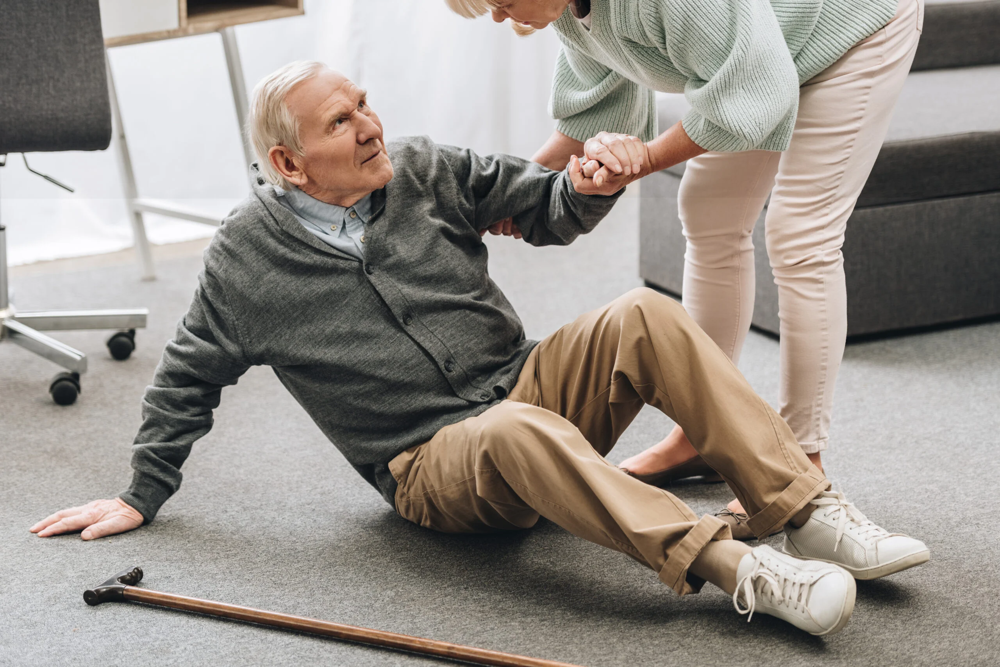
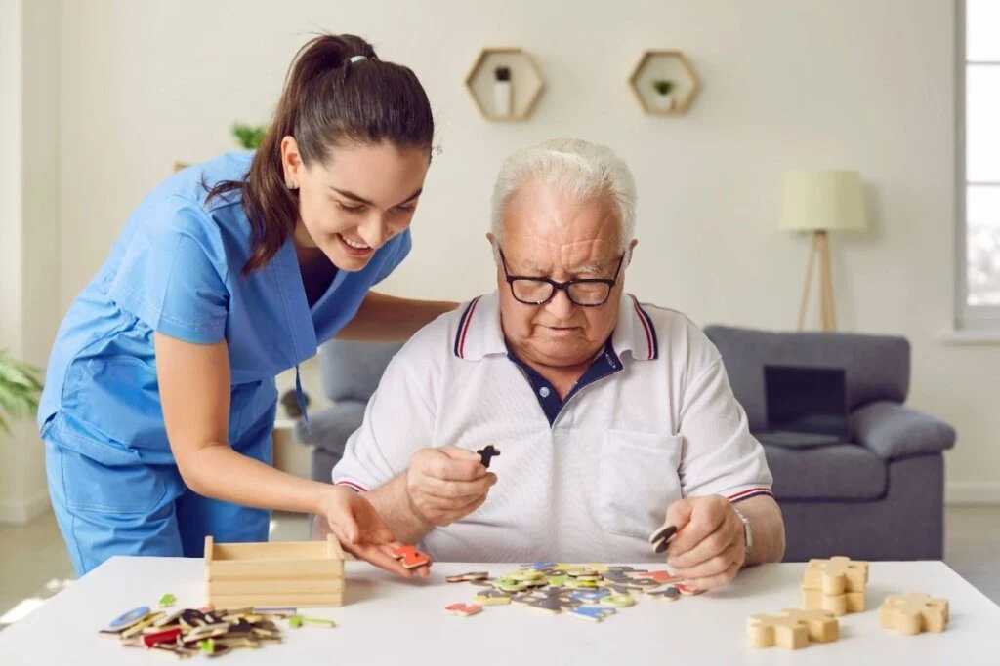

Sua saude em primeiro lugar
Agende sua consulta de forma rápida, humanizada e prática para garantir mais vitalidade e longevidade
Cuidados Especializados para Cada Necessidade
Nossa estrutura é preparada para oferecer acompanhamento humanizado, seguro e focado na longevidade com qualidade de vida.

PREVENÇÃO DE QUEDAS & MOBILIDADE:
Avaliação postural, fortalecimento muscular e orientação para adaptação da casa para evitar acidentes domésticos.
Saiba mais ›OSTEOPOROSE / OSTEOPENIA:
Condições que levam à redução da densidade óssea, aumentando o risco de fraturas, especialmente em idosos.
Saiba mais ›CHECK-UP GERIÁTRICO:
Exames e acompanhamento periódico focado no controle de hipertensão, diabetes e saúde geral.
Saiba mais ›
ESTÍMULO COGNITIVO & MEMÓRIA:
Exercícios e acompanhamento médico preventivo para perda de memória e saúde mental.
Saiba mais ›Planos Pensados para a Sua tranquilidade
Escolha a cobertura ideal para você ou para os seus pais. Sem carência e sem burocracia.
Plano Básico Vital
Ideal para acompanhamento de rotina preventivo.
- check1 Consulta geriátrica presencial/mês
- checkCentral de atendimento em horário comercial
- checkDesconto em exames laboratoriais parceiros
- checkAtendimento em domicílio
Plano Familia Total
Atendimento domiciliar vip e equipe multidisciplinar.
- checkConsultas ilimitadas presenciais/online
- checkVisita médica domiciliar mensal inclusa
- checkFisioterapia e Nutrição geriátrica
- checkGerente de saúde dedicado para a família